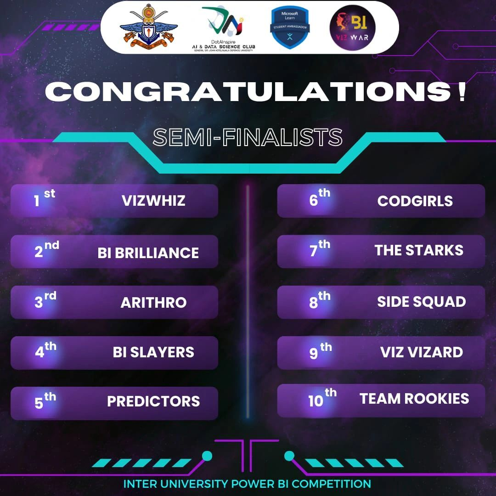
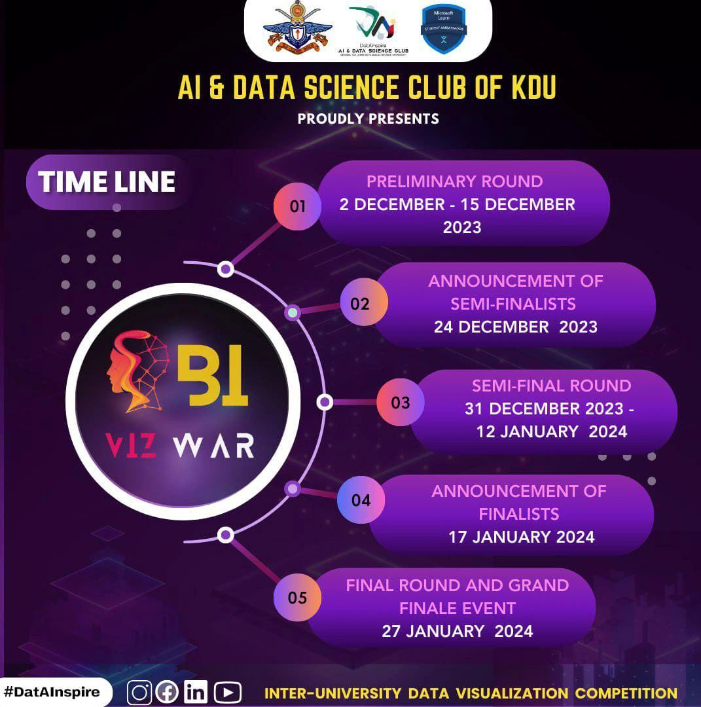
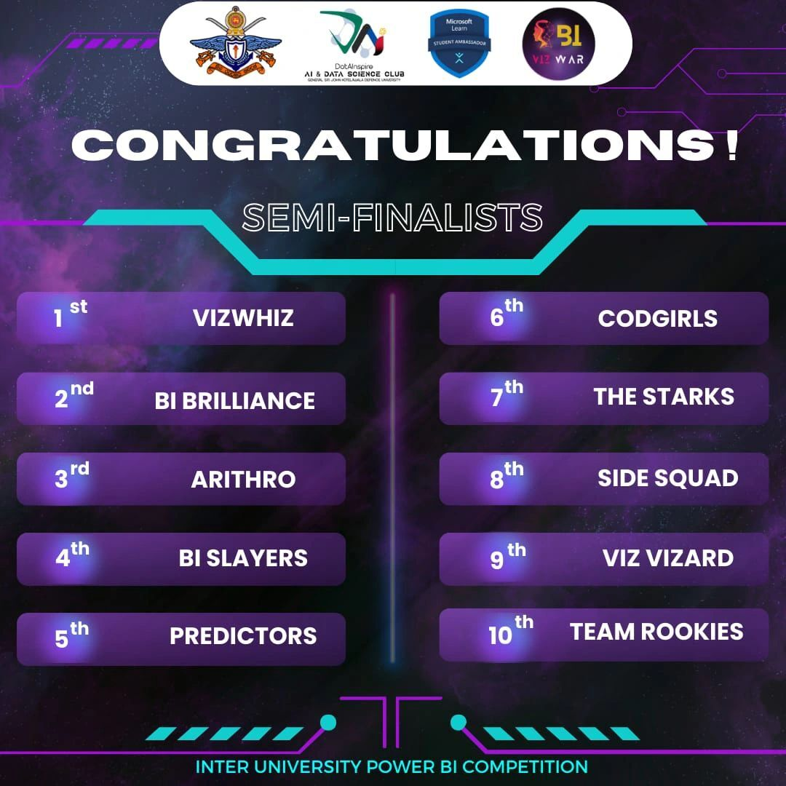
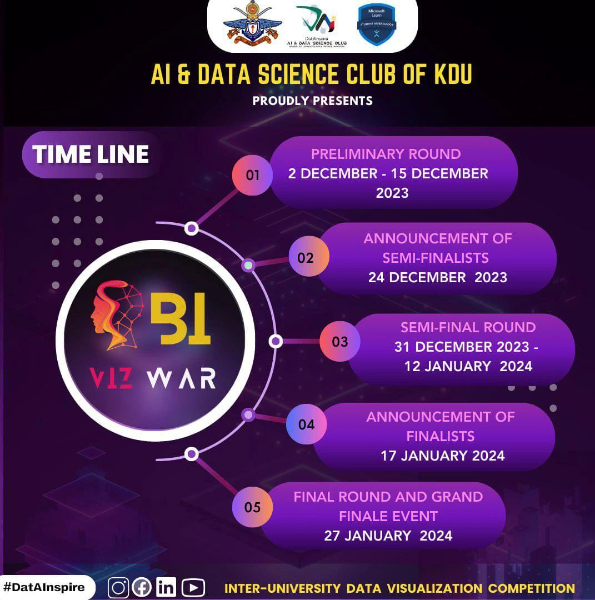

Journey Through Data Brilliance: A Recap of Our 13-Session Power BI Workshop Series!
KDU's AI and Data Science Club proudly concluded a dynamic 13-session Power BI Workshop Series, conducted by industry experts via Zoom. Our immersive exploration into the world of Power BI unfolded with engaging sessions, each helmed by distinguished speakers.
The series commenced with a bang, featuring Ms. Shalini Perera's insights, followed by Ms. Ramalee Rodrigo's deep dive into Data Visualization Best Practices. We delved into AI-powered visuals with Ms. Sanduni Jayasundara, learned about data cleansing with Ms. Ishani Udeshika, and explored advanced data modeling with Mr. Nisal Mihiranga. Further sessions covered Power BI Service and Collaboration with Mr. Ishara Neranjana, Custom Visualizations with Ms. Shamalee Weerasinghe, Advanced DAX Calculation with Ms. Shalini Perera, and Microsoft Fabric with Ms. Ishani Udeshika.
‍The series continued with sessions on Microsoft Fabric, Power BI Integration with Azure by Mr. Umair Ramzan, and Creating Interactive Dashboards with Ms. Ramalee Rodrigo. Special thanks to Mr. Nilhan Perera for wrapping up the series with insights on PowerBI tips and tricks.
We extend heartfelt gratitude to our expert speakers and enthusiastic participants, whose active engagement fueled this collective learning journey. Stay tuned for more tech brilliance and data-driven adventures in our upcoming sessions.

 
